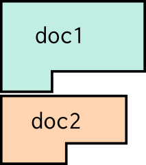
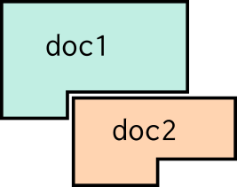

For an introduction to the Pretty Fast Pretty Printer and how to use it, please see the guide. This readme serves as more of a reference manual.
Pretty printing is an approach to printing source code that can adapt how things are printed to fit within a maximum line width. It proceeds in two steps:
Doc), which encodes
all possible ways that the souce can be printed.doc.display(width).There are a variety of pretty-printing algorithms. The PFPP uses a custom algorithm that displays a document in time linear in the number of distinct nodes in the document. (Note that this is better than linear in the size of the document: if a document contains multiple references to a single sub-document, that sub-document is only counted once. This can be an exponential improvement.)
The algorithm takes inspiration from:
Documents are constructed out of six basic combinators:
txt: Texttxt(string) simply displays string. The string cannot contain newlines.
txt("") is an empty document.
For example,
txt("Hello, world")
.display(80);
produces:
Hello, world
All other combinators will automatically wrap string arguments in txt.
As a result, you can almost always write string instead of txt(string).
vert: Vertical Concatenationvert(doc1, doc2, ...) vertically concatenates documents, from top to bottom.
(I.e., it joins them with newlines). The vertical concatenation of two
documents looks like this:

For example,
vert("Hello,", "world!")
.display(80)
produces:
Hello,
world!
Vertical concatenation is associative. Thus:
vert(X, Y, Z)
= vert(X, vert(Y, Z))
= vert(vert(X, Y), Z)
horz: Horizontal Concatenationhorz(doc1, doc2, ...) horizontally concatenates documents. The second document
is indentent to match the last line of the first document (and so forth for the
third document, etc.). The horizontal concatention of two documents looks like
this:

For example,
horz("[", vert("first", "second"), "]")
.display(80)
produces:
[first
second]
Horizontal concatenation is associative. Thus:
horz(X, Y, Z)
= horz(X, horz(Y, Z))
= horz(horz(X, Y), Z)
horzArray(docArray) is a variant of horz that takes a single argument that
is an array of documents. It is equivalent to horz.apply(null, docArray).
concat: Naive Concatenationconcat(doc1, doc2, ...) naively concatenates documents from left to right. It
is similar to horz, except that the indentation level is kept fixed for
all of the documents. The naive concatenation of two documents looks like this:
You should almost always prefer horz over concat.
As an example,
concat("[", vert("first", "second"), "]")
.display(80)
produces:
[first
second]concatArray(docArray) is a variant of concat that takes a single argument
that is an array of documents. It is equivalent to concat.apply(null, docArray).
ifFlat: Choose between two LayoutsifFlat(doc1, doc2) chooses between two documents. It will use doc1 if it
fits entirely on the current line, otherwise it will use doc2. More precisely,
doc1 will be used iff:
vert. And,fullLine: Prevent More on the Same LineFinally, fullLine(doc) ensures that nothing is placed after doc, if at all
possible.
This is helpful for line comments. For example, fullLine("// comment") will
ensure that (if at all possible) nothing is placed after the comment.
Besides the combinators, there are some other useful "utility" constructors. These constructors don't provide any extra power, as they are all defined in terms of the combinators described above. But they capture some useful patterns.
There is also a
string template
shorthand for building a doc, called pretty. Itaccepts template strings that
may contain newlines. It combines the lines with vert, and the parts of each
line with horz. For example, this template:
pretty`if (${c}) {\n ${t}\n} else {\n ${e}\n}`)
pretty prints an if statement across multiple lines:
if (a == b) {
a << 2
} else {
a + b
}
sepBy(sep, vertSep, items) will display either:
items[0] sep items[1] sep ... items[n]
if it fits on one line, or:
items[0] vertSep \n items[1] vertSep \n ... items[n]
otherwise. (Without the extra spaces; those are there for readability.)
Neither sep nor vertSep may contain newlines.
wrap(sep, vertSep, words) does word wrapping. It combines the words with
sep when they fit on the same line, or vertSep\n when they don't.
For simple word wrapping, you would use:
wrap(" ", "", words)
For word-wrapping a comma-separated list, you would use:
wrap(", ", ",", words)
Neither sep nor vertSep may contain newlines.
There are also some constructors for common kinds of s-expressions:
standardSexpr(func, args) is rendered like this:
(func args ... args)
or like this:
(func
args
...
args)
lambdaLikeSexpr(keyword, defn, body) is rendered like this:
(keyword defn body)
or like this:
(keyword defn
body)
beginLikeSexpr(keyword, bodies) is rendered like this:
(keyword
bodies
...
bodies)
withSchemeComment(doc, comment, container) displays a Scheme-style comment.
doc is what's being commented.comment is the comment itself. If it is falsy, there is no comment.container is the ast node that owns the comment. This argument is used to
determine if the comment is a line comment (appears after container on the
same line). Line comments will stay as line comments as long as they fit on the
line. If they don't, they'll be converted into a comment on the previous line.[TODO: this is very CMB specific, and should be moved to the CMB repo.]